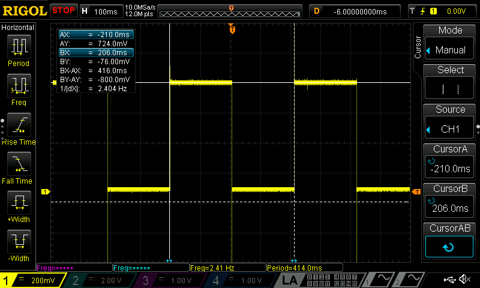

Lab 1: FPGA & MCU Setup & Testing
Sebastian Heredia | dheredia@g.hmc.edu | September 3, 2025
Introduction
In this lab, components were soldered to an FPGA and designs were implemented on the FPGA to demonstrate the functionality of the on-board high-speed oscillator to light up three on-board LEDs in specific sequences and demonstrate hexademical counting from 0 to F on a 7-segment display.
Methods & Design
Development Board Setup
The development board system was constructed by soldering surface mount technology (SMT) and through hole technology (THT) components. The development boards used for the project were the UPduino v3.1 FPGA and the Nucleo-L432KC MCU which were connected to the board via female header pins. Figure 1 below shows the other components soldered to the board, including: DIP switches, LEDS, resistors, capacitor, voltage regulators, and jumpers to provide power to the FPGA and MCU.
Figure 1: Complete μP Dev Board v4 with all components soldered.
Testing FPGA & MCU
Before proceeding, the FPGA and MCU were individually tested using on-board LED blink code to verify proper hardware function. SMT LEDs and resistors were soldered by hand with a soldering iron, however, applying a heat method could have resulted in a aesthetically cleanear look.
FPGA Project Overview
After hardware verification, the FPGA was programmed to complete the lab tasks: Demonstrate hexademical counting from 0 to F on a 7-segment display and correct LED sequences when DIP switches are selected. Table 1 sourced from the E155 Lab 1 Instructions shows types of signals used for the project. Moreover, led[0] and led[1] were designed according to Table 2 and Table 3, respectively. Notably, led[2] was intended to follow a different sequence.
Table 1: Signal name, type, and brief description for each signal used in the project.
| Signal Name | Signal Type | Description |
|---|---|---|
clk |
input | 48MHz clock on FPGA |
s[3:0] |
input | The 4 DIP switches (SW6) |
led[2:0] |
output | 3 LEDS (on-board LEDs) |
seg[6:0] |
output | Common-anode 7-segment display segments |
Table 2: Expected behavior of led[0].
S1 |
S0 |
led[0] |
|---|---|---|
| 0 | 0 | OFF |
| 0 | 1 | ON |
| 1 | 0 | ON |
| 1 | 1 | OFF |
Table 3: Expected behavior of led[1].
S3 |
S2 |
led[1] |
|---|---|---|
| 0 | 0 | OFF |
| 0 | 1 | OFF |
| 1 | 0 | OFF |
| 1 | 1 | ON |
Notably, led[2] was set to blink at 2.4Hz.
For the 7-segment display, each of the four DIP switches should correspond to a bit in the 4-bit binary number that produces hexadecimal characters 0 to F on the display. For example, if the 4-bit DIP switch input is 4'b1010, then the 7-segment display would show A for hexadecimal representation fo decimal 10.
Technical Documentation
The project was contructed using two modules: lab1_DSH.sv and SevenSegment.sv. Figure 2 below shows the block diagram relationship of the modules.
Figure 2: Block diagram showing the relationship between lab1_DSH.sv and SevenSegment.sv.
LED Implementation in lab1_DSH.sv
By inspection of the LED tables, led[0] is turned ON according to the XOR of inputs s[0] and s[1]. Meanwhile, led[1] is turned ON according to the AND of inputs s[2] and s[3]. In order to generate a blinking frequency of 2.4Hz for led[2], a clock divider was adapted to cycle down the 48MHz on-board HSOSC. First the HSOSC was divided in half using CLKHF_DIV(2'b01) from the HSOSC library. A frequency of 2.4Hz means led[2] cycles blinks every 0.4167 seconds. Since a full ON-OFF or OFF-ON cycle takes two toggles, the updated clock must count every 0.2083 seconds. Thus, 5,000,000 counts of the now 24MHz clock will register one toggle for led[2] to cycle every 0.2803 seconds = 5,000,000 / 24MHz.
7-Segment Implementation in SevenSegment.sv
The 7-segment display was designed using combination logic to map sixteen DIP switch cases to output 0 to F on the display. Since the 7-segment display had a common anode design, pins were driven LOW to light up their respective segments. Figure 3 shows the schematic for how the 7-segment display was wired to the FPGA and the connection to the LEDs and SW6 DIP switches. Furthermore, Figure 4 provides the justification for pull-down resistor values for the 7-segment display.
Figure 3: Schematic showing the wiring of the 7-segment display to the FPGA and DIP switches.
Figure 4: Calculations to justify the 7-segment display resistor values.
Results & Discussion
The design accomplished all the prescribed tasks. Testbenches and testvectors were written for each module and were successfully simulated in Questa. Figure 5 shows that top-level lab1_DSH.sv module matches all expectations for LED patterns and 7-segment display values.
Figure 5: All LED and 7-segment display outcomes matched expectations in Questa.
Since, the WaveSim did not reflect led[2] blinking accuracy, an oscilloscope was used to measure the LED component’s frequency in real-time. Figure 6 verifies that led[2] blinked at a frequency of 2.404Hz.
 Figure 6: The blinking frequency of led[2] was confirmed to be 2.404Hz using an oscilloscope.
Conclusion & Demo
All designs were successfuly implemented on the FPGA. All simulations matched expectations and the physical hardware behaved as intended. The lab took a total of 27 hours to complete.
Through this lab, I gained hands-on practice with assembling a development board and testing hardware, programming hardware through SystemVerilog, and interfacing a 7-segment display to the FPGA board. Overall, Lab 1 was a good practice with soldering and a solid introduction to programming with Lattice Radiant.
The most significant issues with the lab were with the lack of materials and inefficient tools. First, there was a shortage of key equipment such as SMT LEDs and ribbon cables. Second, the software itself was very slow to open, often taking 10 minutes to start up. Third, inconsistency of the port connections when connecting the FPGA to the lab computer never worked immediately. Had these external factors been not been an issue, the time to complete the lab might be cut down by a third.
AI Prototype
The purpose of the AI Prototype is to experiment with usign AI as a coding assistant to produce HDL. The following prompt was entered to ChatGPT 5.0.
Write SystemVerilog HDL to leverage the internal high speed oscillator in the Lattice UP5K FPGA and blink an LED at 2 Hz. Take full advantage of SystemVerilog syntax, for example, using logic instead of wire and reg.
Initially, ChatGPT 5.0 was unable to produce synthasizable code since the the libraries it instatiated were not setup in the Lattice Radiant project. By nudging the LLM with phrases such as ’write a fully functional” and providing it error feedback from Lattice Radiant, the LLM was able to produce synthasizable code by its third iteration.
In terms of speed to produce a solution, the LLM was very fast, producing detailed solutions with comments in seconds. Although the code contained 1-2 errors initially, after very little prompting adjustments, the LLM was able to produce a succinct and accurate code chunk that followed similar logic to the counter divider that was used in this lab.
Overall, ChatGPT 5.0’s output is impressive since it was generated nearly instantly, synthasized within a few attempts, and eventually produced a reasonable and detailed solution with surface-level guidance. Moreover, the errors made were not forseeable given the original prompting context. To avoid programming errors in the future when working with LLMs, it is important to provide the full context of your project (e.g. List of installed libraries).